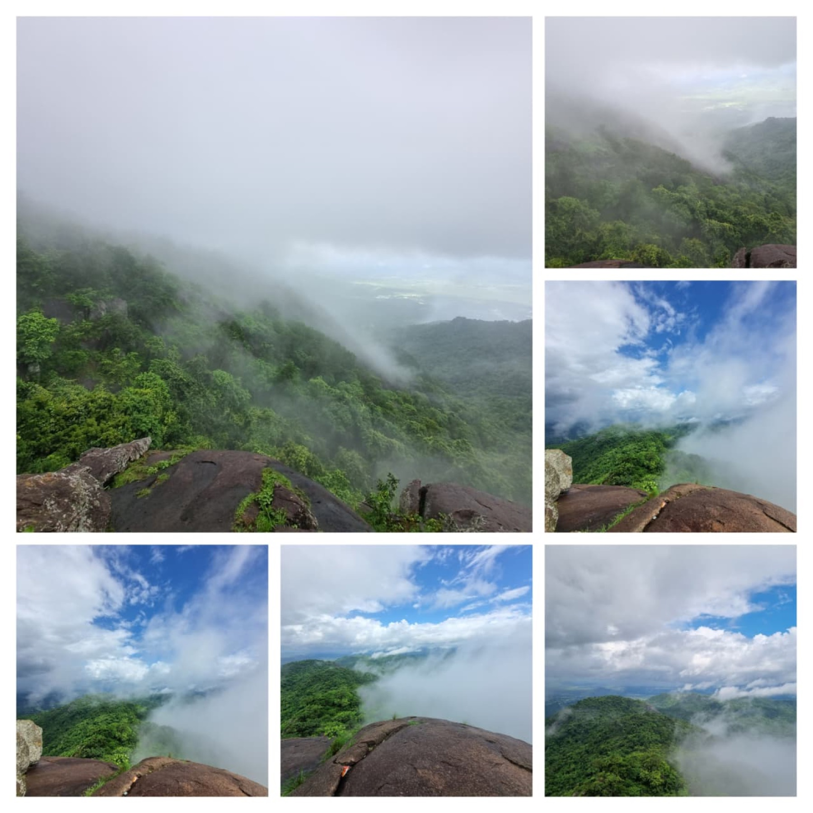
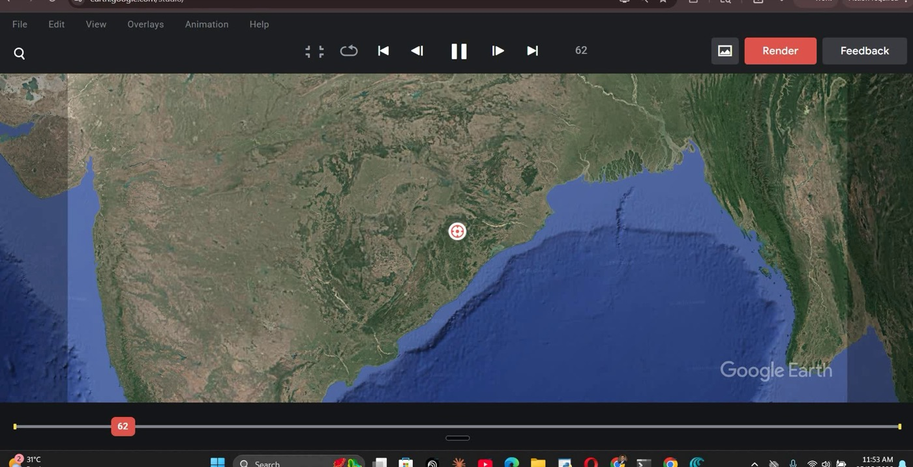
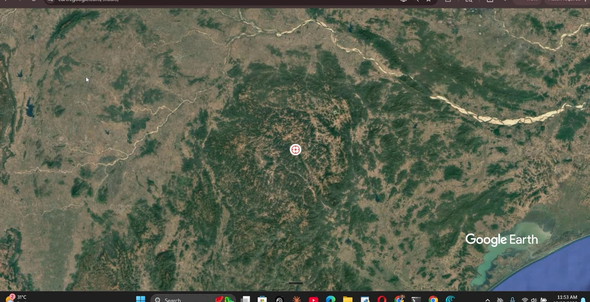
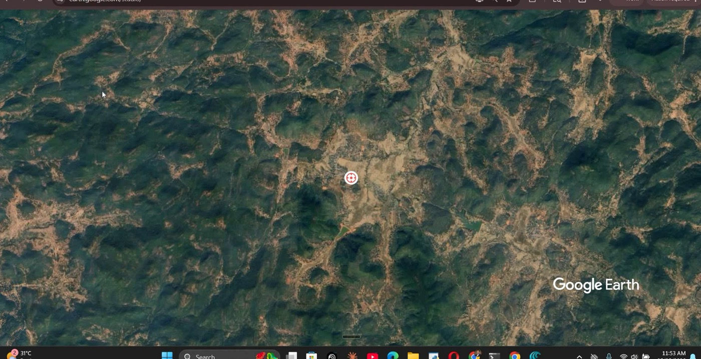
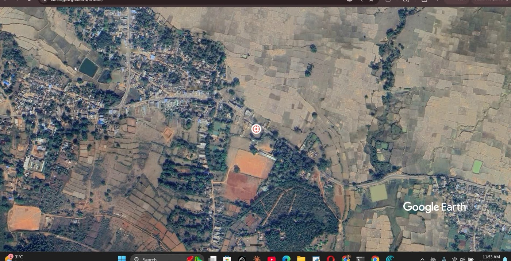
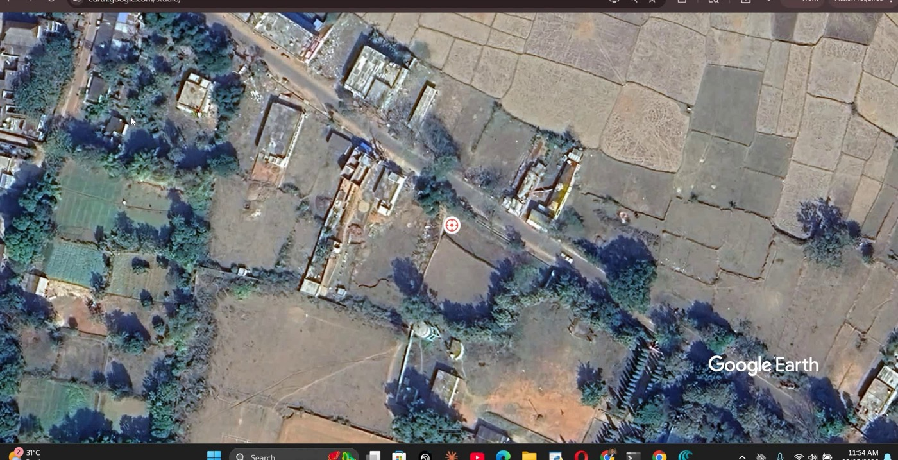
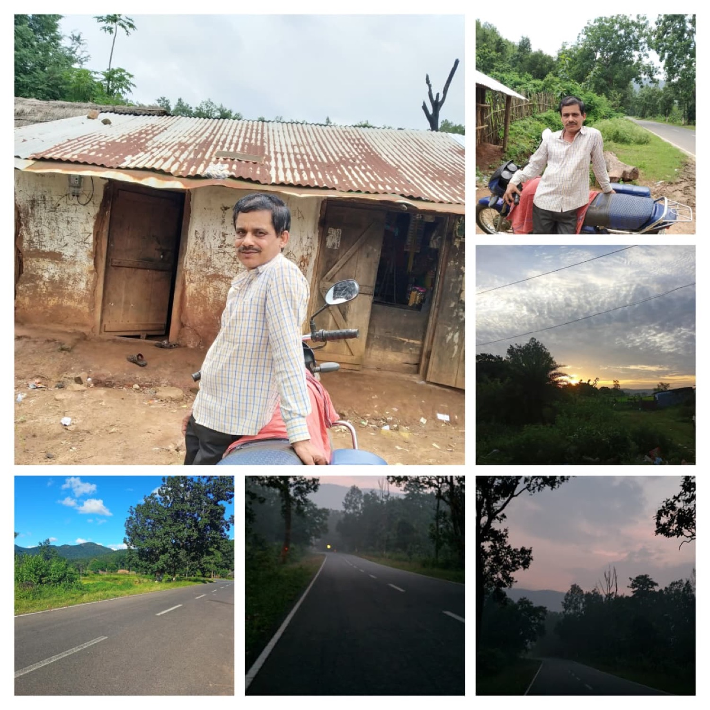
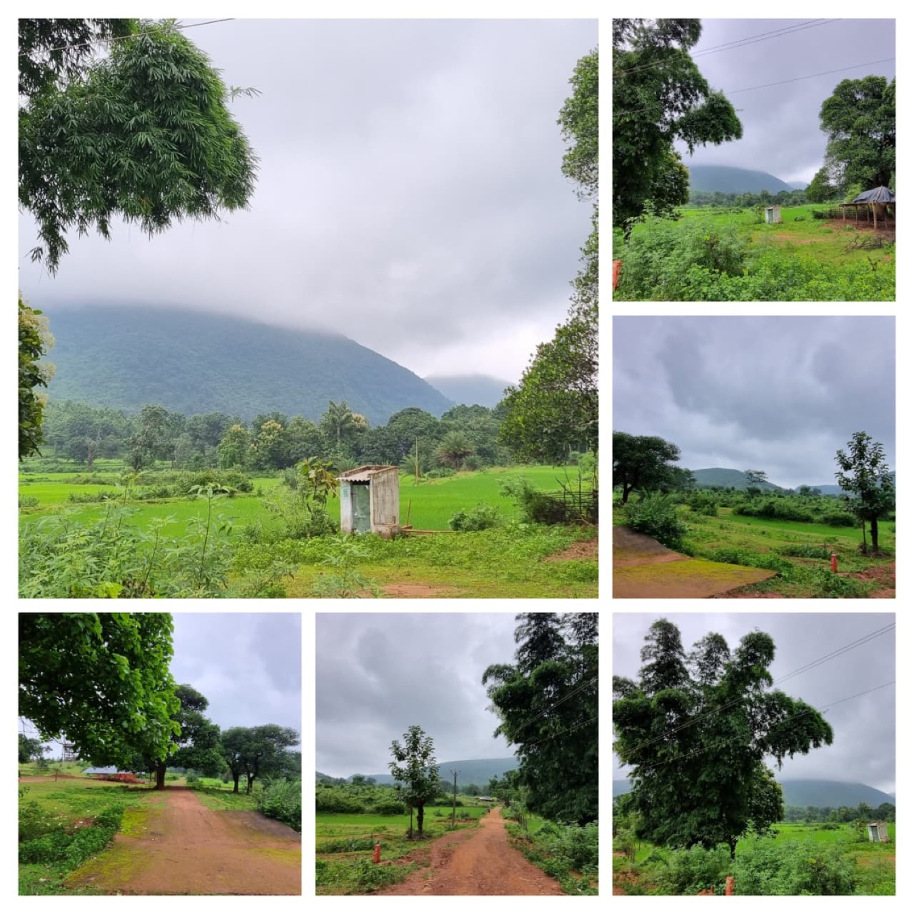
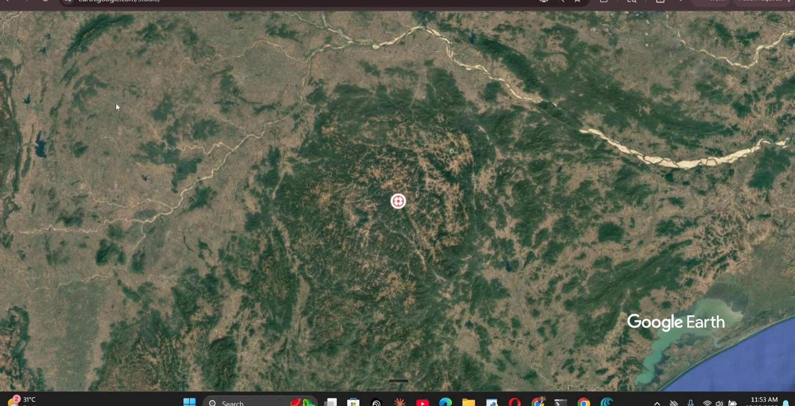

Entry 01
The Day Flows West
The strongest essay. It lets geography do the brand work without over-selling the stay.
Pilot in design / Sarangada, Kandhamal
The Weight of Belonging. A westward life-exchange pilot is being built from red soil, eastern fields, the market spine, and the hills beyond Sarangada. The seven-day arc is a design draft, not a public offer yet.
A better formula.
Start with Sarangada as terrain: red laterite, fields, market road, southern entry, and westward dusk.
Keep private homes, sacred spaces, children, routes, and stories out of the offer until residents decide the limits.
Only then test the seven-day arc quietly, with trusted guests and a host model that is actually ready.
From map to ground.
A vertical descent from the larger Kandhamal landscape into the village logic: district, hills, settlement, spine, and the westward edge.





No fake experiences. Just life as it is.
This is not a scenic rural escape. It is a slow-stay pilot being built from the ordinary geography of one village.
Maati Katha starts with a simple refusal: do not dress village life up for visitors, and do not hide the present day to make it look older. The road, the phone, the tin roof, the chulha, the field, and the power line all belong in the same frame.
The pilot is being designed like a piece of field writing: arrival, walking, eating, listening, noticing what is public, and learning what is not yours to enter.
Sarangada is a west-flowing village: the day begins toward fields and ends toward the hills.
A village has a direction.
Fields, morning light, agricultural work, the social beginning of the day.
The market spine, houses, errands, conversations, visible daily life.
Hills, forest paths, dusk, and the parts of the village that must be approached with permission.
The arc, not the final itinerary.
The proposed week follows the village's own movement: south entry, eastern fields, market core, water, turmeric nearby, and the hills to the west. Each step still needs field confirmation before it becomes a public stay.
The working entry is from the Baliguda side: rest, tea, and a first consent-led reading of the market spine.
Eastern and northern agricultural belts are the morning study: paddy, bunds, soil, and route notes to verify.
The market core is being treated as observation first: public life, language, errands, and everyday exchange.
Neighbouring turmeric fields enter the arc only after grower consent, exact route, season, and payment are settled.
The pond, well, and ritual layer require names, history, and permission before writing.
Forest path and hillside remain unmapped for guests. A local guide decides what is safe, private, or not for visitors.
The closing day is still a design note: leave with fewer souvenirs and a more accurate sense of what belonging weighs.

Existing visual material is useful as a research prompt. Final public photography should be single-subject, consent-based, and dated.Before anyone is invited.
Confirm host household, sleeping space, bathing, food, charging, privacy, and emergency plan.
Ask who is comfortable being photographed, interviewed, named, translated, or left out.
Map the spine, pond, public institutions, field paths, and western route with GPS.
Identify what guests must never photograph: children, rituals, private homes, sacred spaces, conflict-sensitive sites.
Run one private pilot with two trusted guests before any public requests are accepted.
Journal, not brochure.
The site should sound like someone paying attention, not like a tourism campaign trying to sound deep.

The strongest essay. It lets geography do the brand work without over-selling the stay.

Mud, metal, phones, fields, roads. Do not photograph only the old. The modern is also true.

Names of paths, ponds, houses, shrines, fields, and boundaries should come from people, not guesses.
Quietly, after the work.
For now, the practical work is simple: finish the truth audit, visit Sarangada with a checklist, and run one private test stay before taking requests from strangers.